9 Publication Graphics with ggplot2
9.1 Learning Objectives
In this lesson, you will learn:
- The basics of the
ggplot2package - How to use
ggplot2’s theming abilities to create publication-grade graphics - How to create multi-panel plots
9.2 Overview
ggplot2 is a popular package for visualizing data in R. From the home page:
ggplot2 is a system for declaratively creating graphics, based on The Grammar of Graphics. You provide the data, tell ggplot2 how to map variables to aesthetics, what graphical primitives to use, and it takes care of the details.
It’s been around for years and has pretty good documentation and tons of example code around the web (like on StackOverflow). This lesson will introduce you to the basic components of working with ggplot2.
9.3 ggplot vs base vs lattice vs XYZ…
R provides many ways to get your data into a plot. Three common ones are,
- “base graphics” (
plot(),hist(), etc`) - lattice
- ggplot2
All of them work! I use base graphics for simple, quick and dirty plots. I use ggplot2 for most everything else.
ggplot2 excels at making complicated plots easy and easy plots simple enough.
9.4 Setup
To demonstrate ggplot2, we’re going to work with two example datasets
suppressPackageStartupMessages({
library(ggplot2)
library(tidyr)
library(dplyr)
})
# https://knb.ecoinformatics.org/#view/urn:uuid:e05865d7-678d-4513-9061-2ab7d979f8e7
# Search 'permit value'
permits <- read.csv(url("https://knb.ecoinformatics.org/knb/d1/mn/v2/object/urn%3Auuid%3Aa3c58bd6-481e-4c64-aa93-795df10a4664", method = "libcurl"),
stringsAsFactors = FALSE)9.5 Geoms / Aesthetics
Every graphic you make in ggplot2 will have at least one aesthetic and at least one geom (layer). The aesthetic maps your data to your geometry (layer). Your geometry specifies the type of plot we’re making (point, bar, etc.).
ggplot(permits, aes(Value, StdDev)) +
geom_point()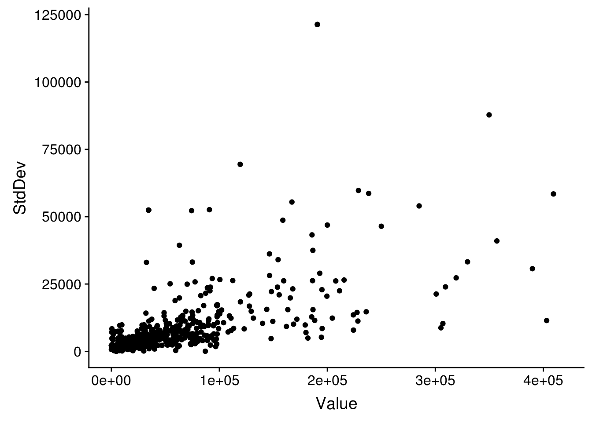
What makes ggplot really powerful is how quickly we can make this plot visualize more aspects of our data. Coloring each point by class (compact, van, pickup, etc.) is just a quick extra bit of code:
ggplot(permits, aes(Value, StdDev, color = Gear)) +
geom_point()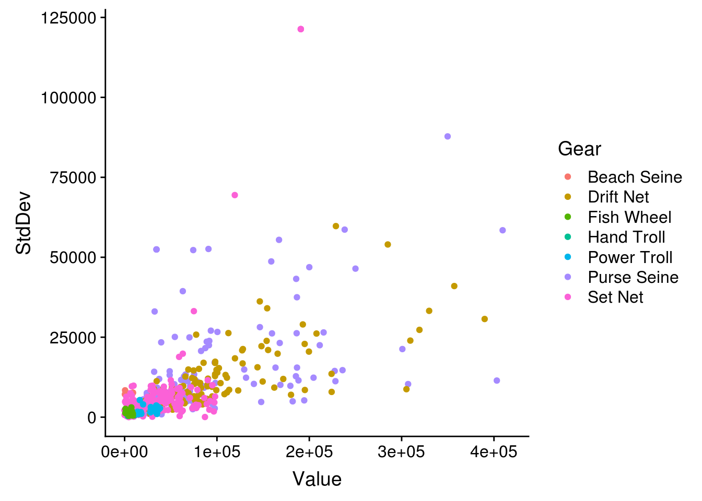
Aside: How did I know to write color = class?
aes will pass its arguments on to any geoms you use and we can find out what aesthetic mappings geom_point takes with ?geom_point (see section “Aesthetics”)
- Exercise: Find another aesthetic mapping
geom_pointcan take and add add it to the plot.
What if we just wanted the color of the points to be blue? Maybe we’d do this:
ggplot(permits, aes(Value, StdDev, color = "blue")) +
geom_point()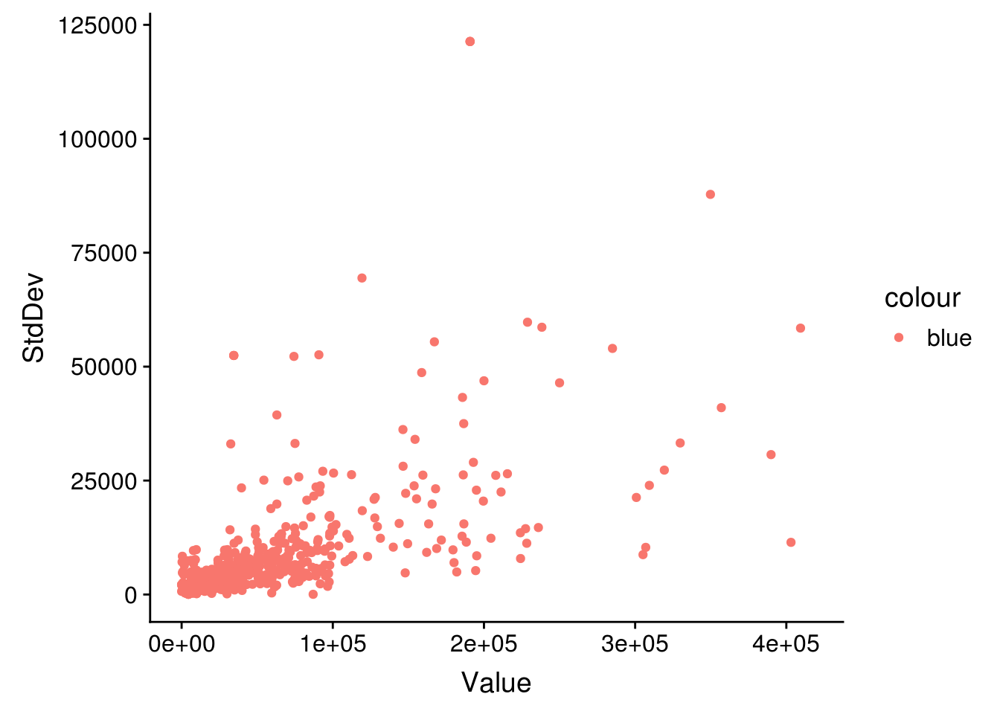
Well that’s weird – why are the points red?
What happened here?
This is the difference between setting and mapping in ggplot.
The aes function only takes mappings from our data onto our geom.
If we want to make all the points blue, we need to set it inside the geom:
ggplot(permits, aes(Value, StdDev)) +
geom_point(color = "blue")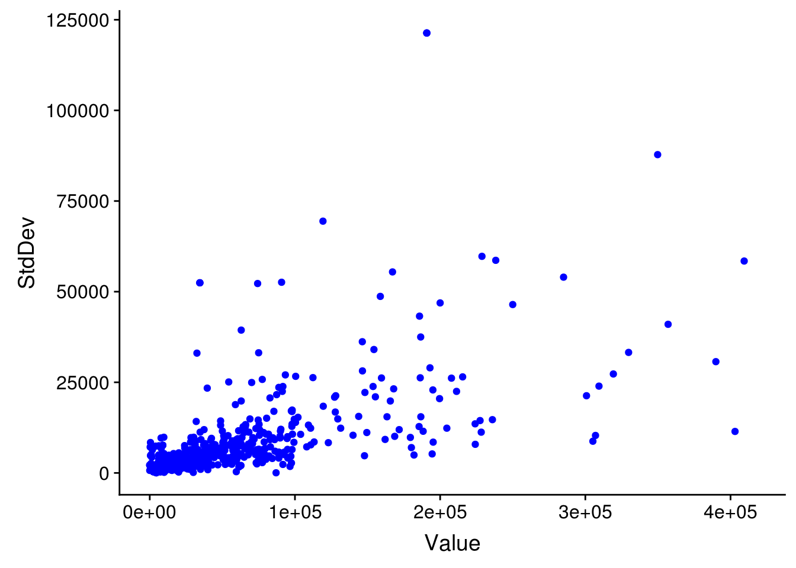
- Exercise: Using the aesthetic you discovered and tried above, set another aesthetic onto our points.
Sizing each point by the range of the permit values is only a small change to the code:
ggplot(permits, aes(Value, StdDev, color = Gear, size = Range)) +
geom_point()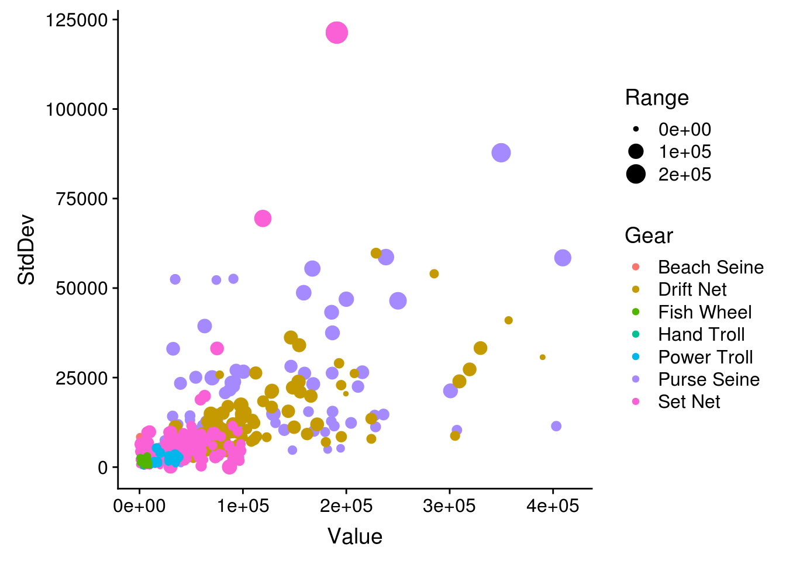
So it’s clear we can make scatter and bubble plots. What other kinds of plots can we make? (Hint: Tons)
Let’s make a histogram:
ggplot(permits, aes(Value)) +
geom_histogram()## `stat_bin()` using `bins = 30`. Pick better value with `binwidth`.## Warning: Removed 14 rows containing non-finite values (stat_bin).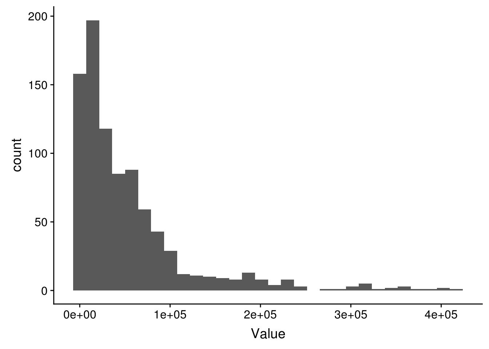
You’ll see with a warning (red text):
stat_bin() using bins = 30. Pick better value with binwidth.
ggplot2 can calculate statistics on our data such as frequencies and, in this case, it’s doing that on our hwy column with the stat_bin function.
Binning data requires choosing a bin size and the choice of bin size can completely change our histogram (possibly resulting in misleading conclusions about how the values are distributed).
We might want to change the bins argument in this case to something narrower:
ggplot(permits, aes(Value)) +
geom_histogram(binwidth = 1e4)## Warning: Removed 14 rows containing non-finite values (stat_bin).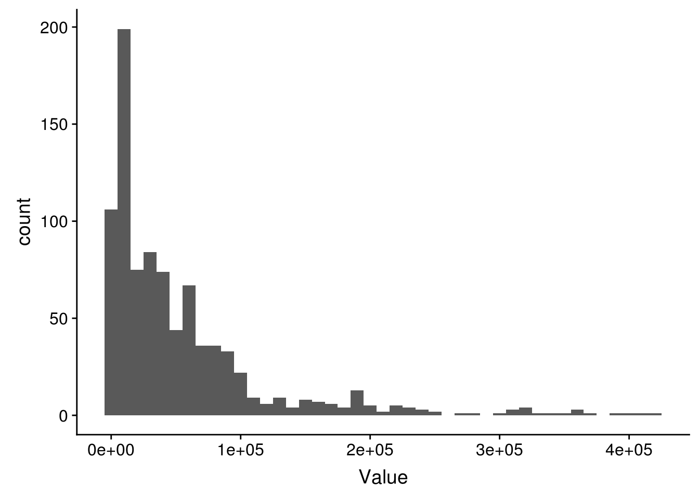
- Exercise: Find an aesthetic
geom_histogramsupports and try it out.
I’m a big fan of box plots and ggplot2 can plot these too:
ggplot(permits, aes(Gear, Value)) +
geom_boxplot()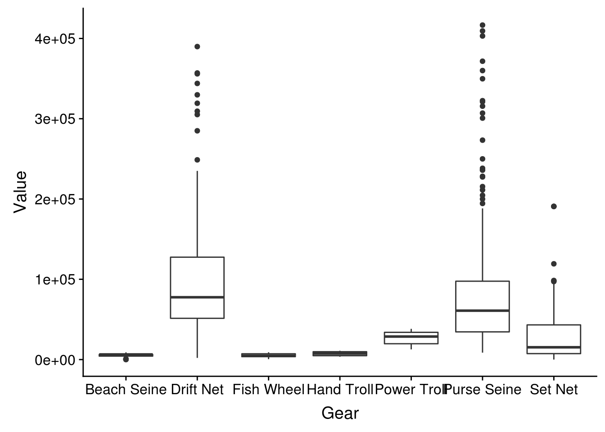
Another type of visualization I use a lot for seeing my distributions is the violin plot:
permits_ci <- permits %>%
filter(Region == "Cook Inlet")
ggplot(permits_ci, aes(Gear, Value)) +
geom_violin()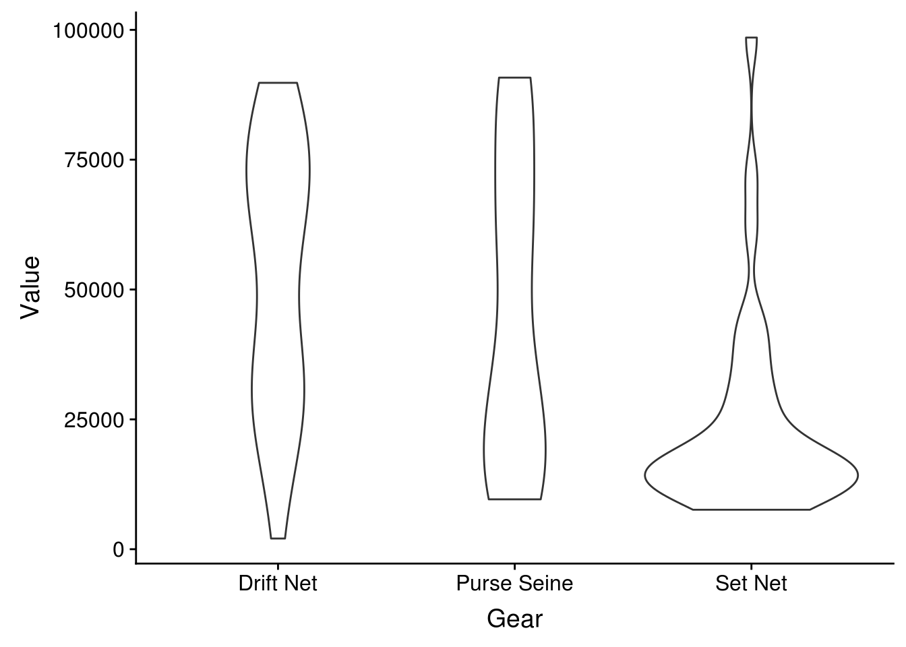
So far we’ve made really simple plots: One geometry per plot. Let’s layer multiple geometries on top of one another to show the raw points on top of the violins:
ggplot(permits_ci, aes(Gear, Value)) +
geom_violin() +
geom_point(shape = 1, position = "jitter")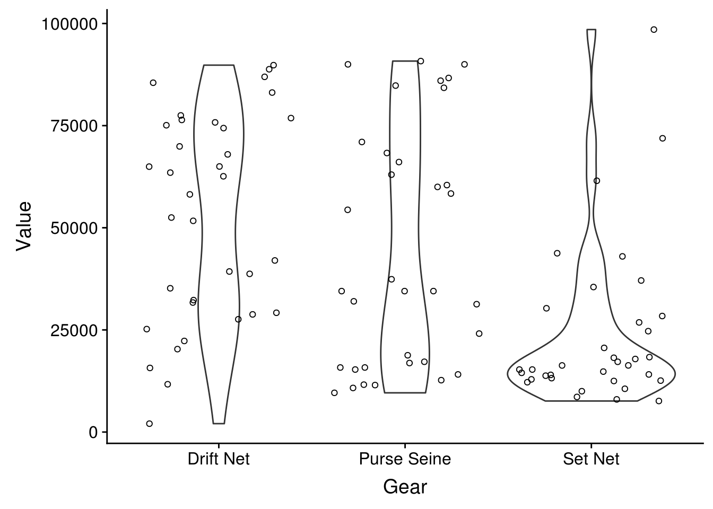
Some geoms can do even more than just show us our data. ggplot2 also helps us do some quick-and-dirty modeling:
ggplot(permits, aes(Value, StdDev)) +
geom_point() +
geom_smooth()## `geom_smooth()` using method = 'loess' and formula 'y ~ x'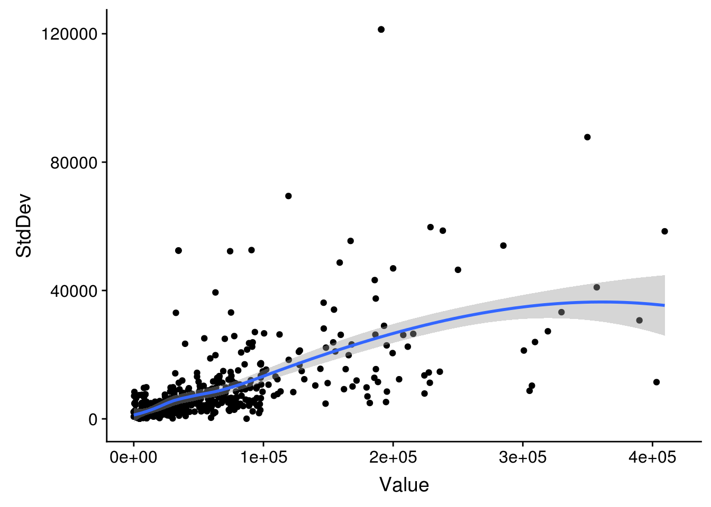
Notice the mesage in red text
geom_smooth() using method = 'loess'
geom_smooth defaulted here to using a LOESS smoother.
But geom_smooth() is pretty configurable.
Here we set the method to lm instead of the default loess:
ggplot(permits, aes(Value, StdDev)) +
geom_point() +
geom_smooth(method = "lm")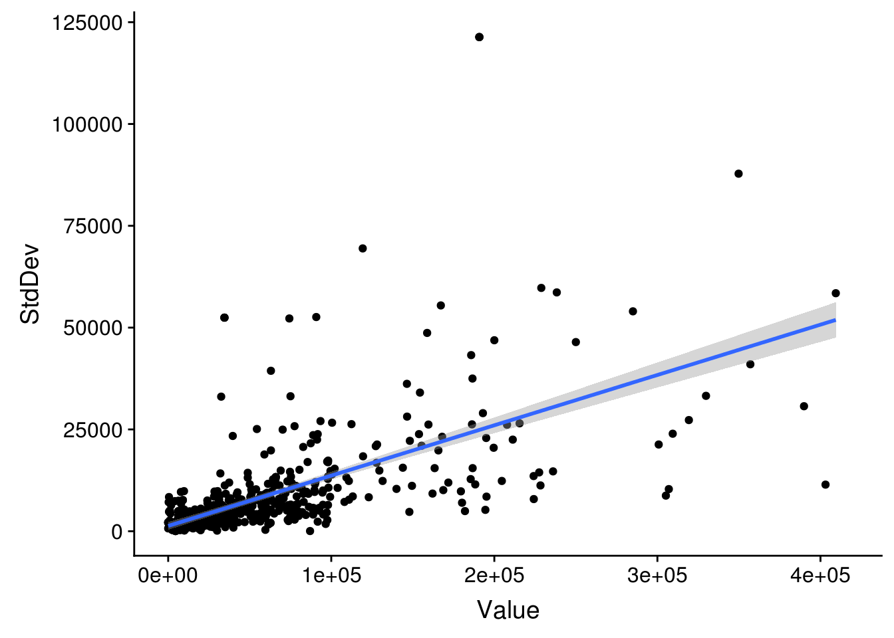
Sometimes we want to show more than one factor, say in a bar plot.
First we summarize over years, calculating the mean permit value by Region and Gear.
permits_sum <- permits %>%
group_by(Gear, Region) %>%
summarize(mean_value = mean(Value, na.rm = T))Now we show the mean value of permits by gear and region using geom_bar and the fill aesthetic.
ggplot(permits_sum, aes(x = Gear, y = mean_value, fill = Region)) +
geom_bar(position = "stack", stat = "identity")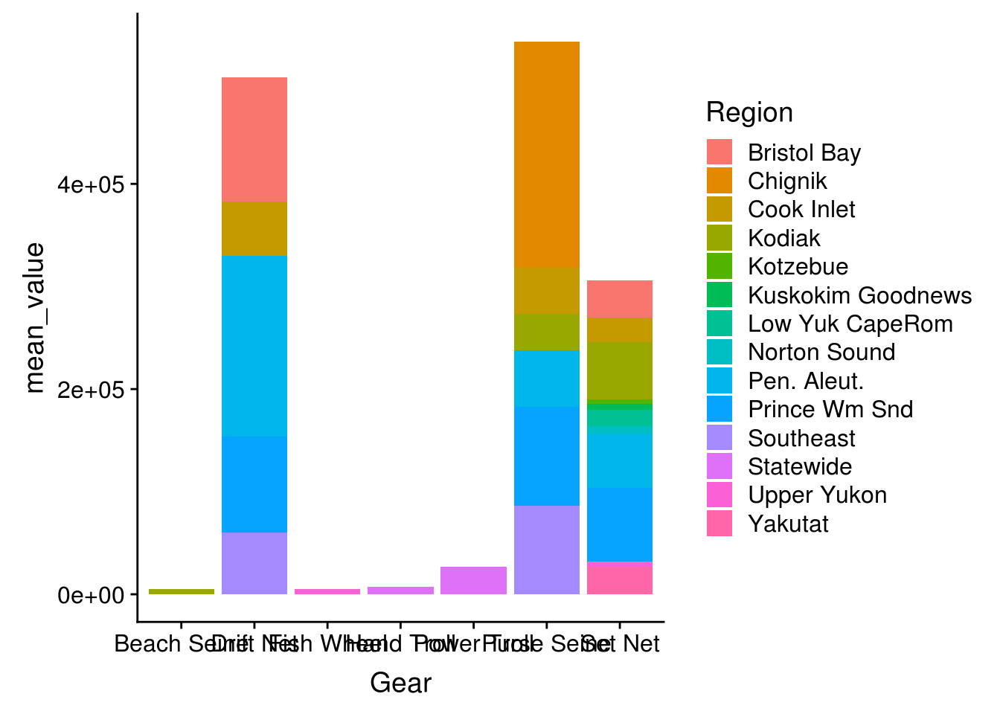
The position = "stack" argument tells geom_bar to stack the regions in each gear bar, and the stat = "identity" argument tells it to map the y aesthetic (mean_value) to the y axis, as opposed to the count of rows calculated for unique values in the Gear and Region columns.
For this dataset, the stack doesn’t make sense if we want to look at relative mean permit values. position = "dodge" makes more sense:
ggplot(permits_sum, aes(x = Gear, y = mean_value, fill = Region)) +
geom_bar(position = "dodge", stat = "identity")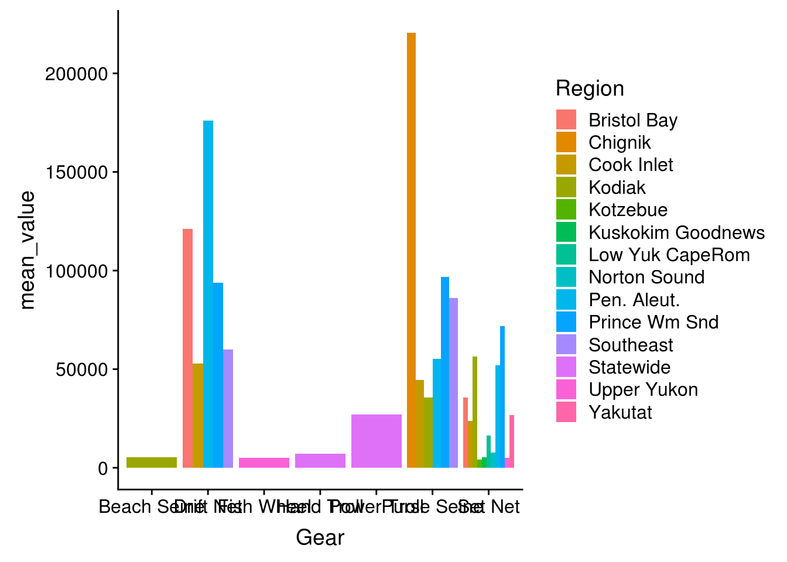
If you want to instead compare percentages (which doesn’t make much sense with this data, but we show the example anyway), you set position = "fill"
ggplot(permits_sum, aes(x = Gear, y = mean_value, fill = Region)) +
geom_bar(position = "fill", stat = "identity")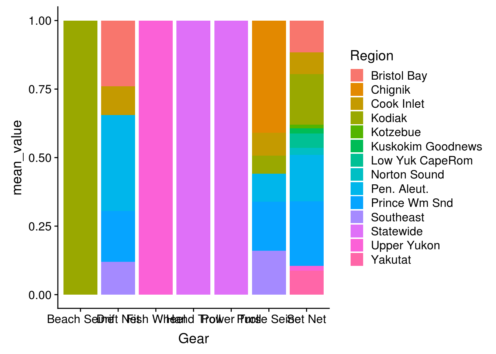
More on geoms here: http://ggplot2.tidyverse.org/reference/index.html#section-layer-geoms
9.6 Setting plot limits
Plot limits can be controlled one of three ways:
- Filter the data (because limits are auto-calculated from the data ranges)
- Set the
limitsargument on one or both scales - Set the
xlimandylimarguments incoord_cartesian()
Let’s show this with an example plot:
permits_se_seine <- permits %>%
filter(Gear == "Purse Seine",
Region == "Southeast")
ggplot(permits_se_seine, aes(Year, Value)) +
geom_point() +
geom_line()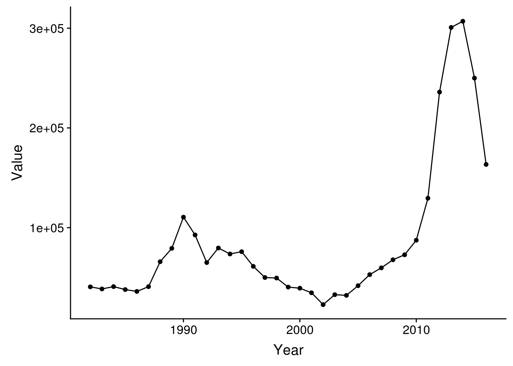
Let’s make the Y axis start from 0:
ggplot(permits_se_seine, aes(Year, Value)) +
geom_point() +
geom_line() +
scale_y_continuous(limits = c(0, max(permits_se_seine$Value)))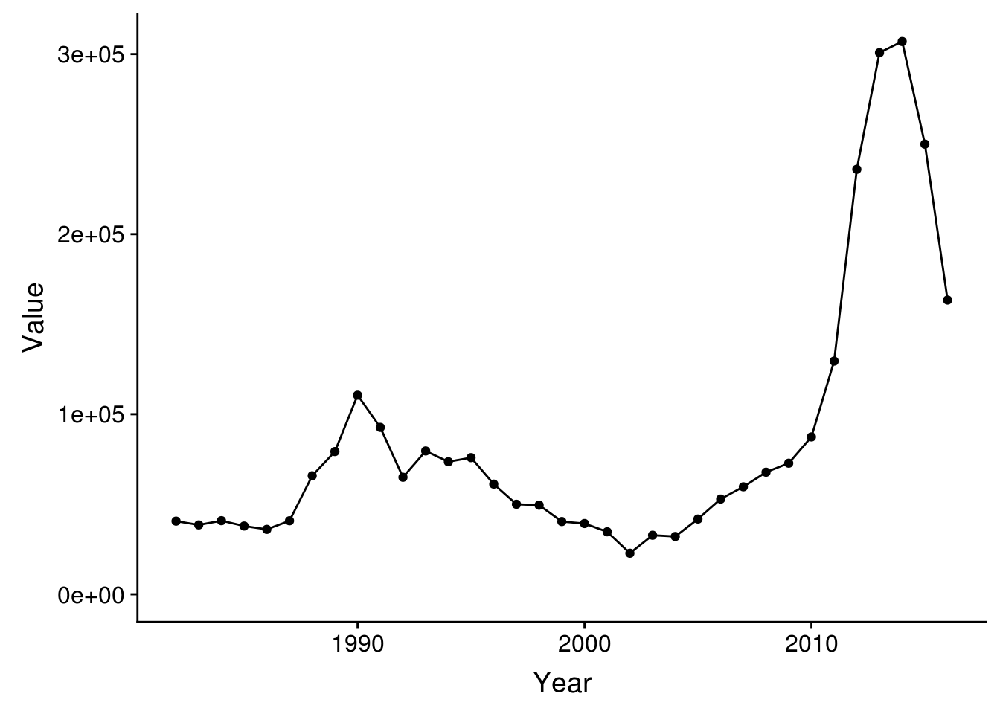
Let’s say, for some reason, we wanted to only show data from the year 2000 and onward:
ggplot(permits_se_seine, aes(Year, Value)) +
geom_point() +
geom_line() +
scale_y_continuous(limits = c(0, max(permits_se_seine$Value))) +
scale_x_continuous(limits = c(2000, max(permits_se_seine$Year)))## Warning: Removed 18 rows containing missing values (geom_point).## Warning: Removed 18 rows containing missing values (geom_path).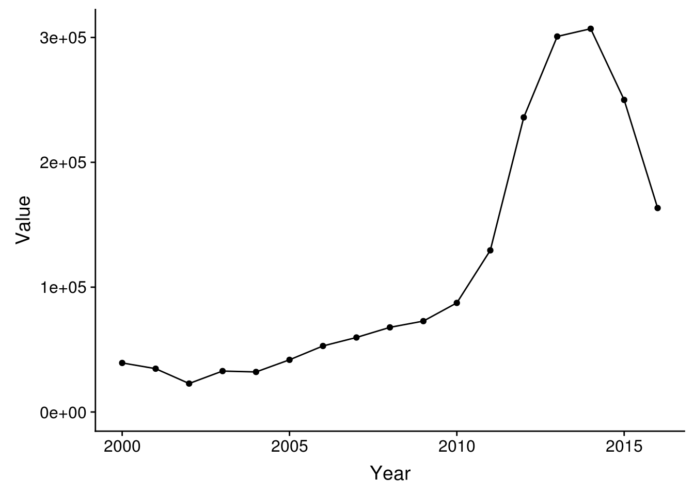
Note the warning message we received:
Warning message: Removed 18 rows containing missing values (geom_point). Removed 18 rows containing missing values (geom_path).
That’s normal when data in your input data.frame are outside the range we’re plotting.
Let’s use coord_cartesian instead to change the x and y limits:
ggplot(permits_se_seine, aes(Year, Value)) +
geom_point() +
geom_line() +
coord_cartesian(xlim = c(2000, max(permits_se_seine$Year)),
ylim = c(0, max(permits_se_seine$Value)))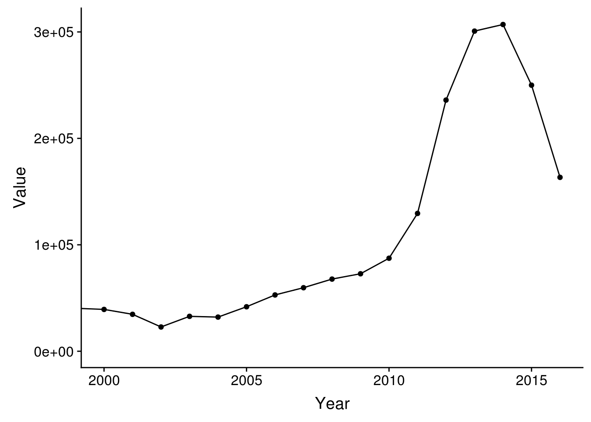
Note the **slight* difference when using coord_cartesian: ggplot didn’t put a buffer around our values.
Sometimes we want this and sometimes we don’t and it’s good to know this difference.
9.7 Scales
The usual use case is to do things like changing scale limits or change the way our data are mapped onto our geom. We’ll use scales in ggplot2 very often!
For example, how do we override the default colors ggplot2 uses here?
ggplot(permits, aes(Value, StdDev, color = Gear)) +
geom_point()Tip: Most scales follow the format `scale_{aesthetic}_{method} where aesthetic are our aesthetic mappings such as color, fill, shape and method is how the colors, fill colors, and shapes are chosen.
ggplot(permits, aes(Value, StdDev, color = Gear)) +
geom_point() +
scale_color_manual(values = c("red", "orange", "yellow", "green", "blue", "purple", "violet")) # ROYGBIV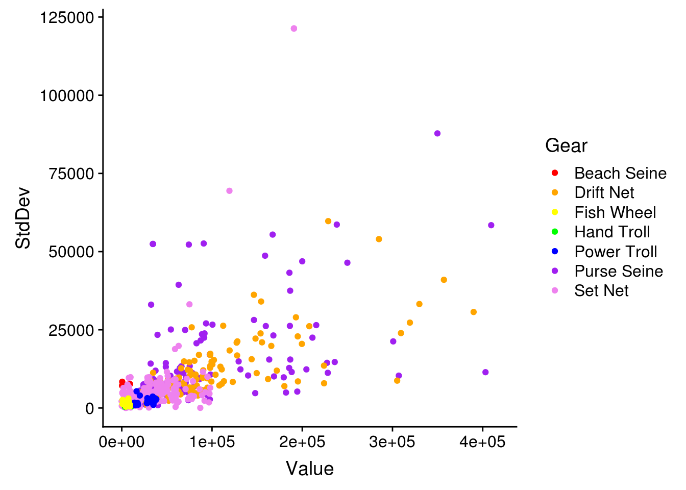
I’m sure that was a ton of fun to type out but we can make things easier on ourselves:
ggplot(permits, aes(Value, StdDev, color = Gear)) +
geom_point() +
scale_color_hue(h = c(270, 360)) # blue to red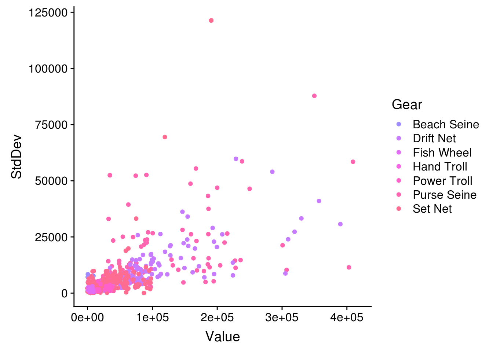
Above we were using scales to scale the color aesthetic.
We can also use scales to rescale our data.
ggplot(permits, aes(Value, StdDev, color = Gear)) +
geom_point() +
scale_x_log10()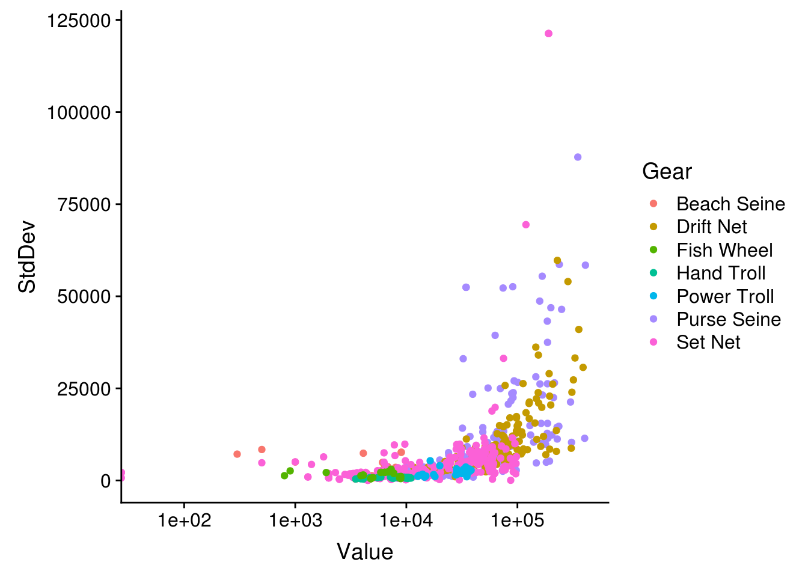
Scales can also be used to change our axes. For example, we can override the labels:
ggplot(permits, aes(Value, StdDev, color = Gear)) +
geom_point()## Warning: Removed 223 rows containing missing values (geom_point).
permits %>%
group_by(Gear) %>%
summarize(meanval = mean(Value, na.rm = TRUE)) %>%
ggplot(aes(Gear, meanval)) +
geom_col() +
scale_x_discrete(labels = sort(unique(permits$Gear)))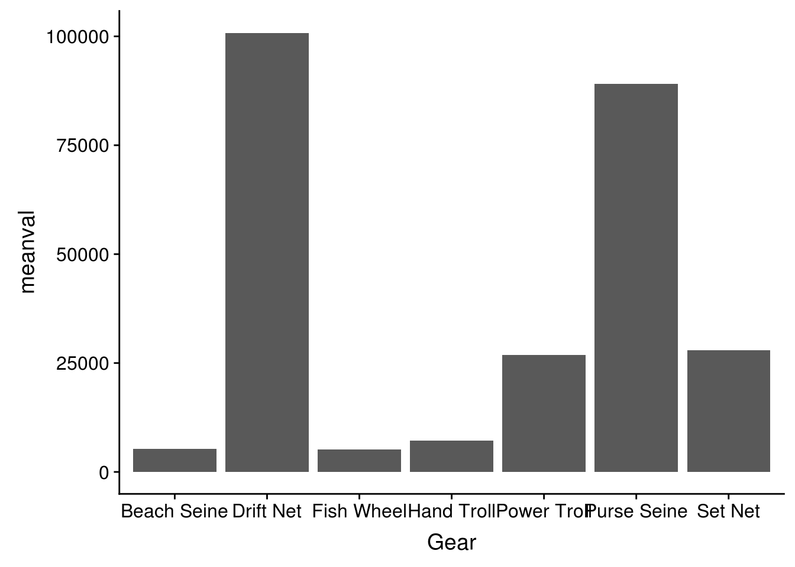
Or change the breaks:
ggplot(permits_se_seine, aes(Year, Value)) +
geom_point() +
geom_line() +
scale_x_continuous(breaks = c(1990, 2010))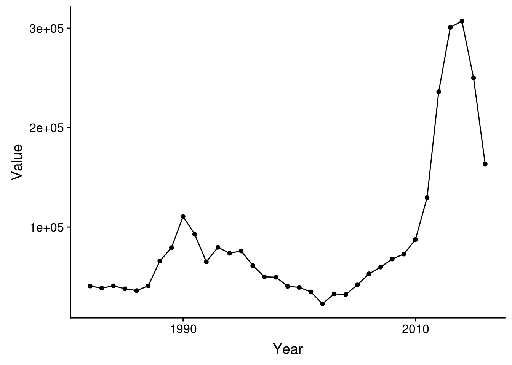
9.8 Facets
Facets allow us to create a powerful visualization called a small multiple:
http://www.latimes.com/local/lanow/la-me-g-california-drought-map-htmlstory.html
I use small multiples all the time when I have a variable like a site or year and I want to quickly compare across years. Let’s create a graphical comparison of the permit prices in Cook Inlet over time:
ggplot(permits_ci, aes(Year, Value)) +
geom_point() +
geom_line() +
facet_wrap(~ Gear)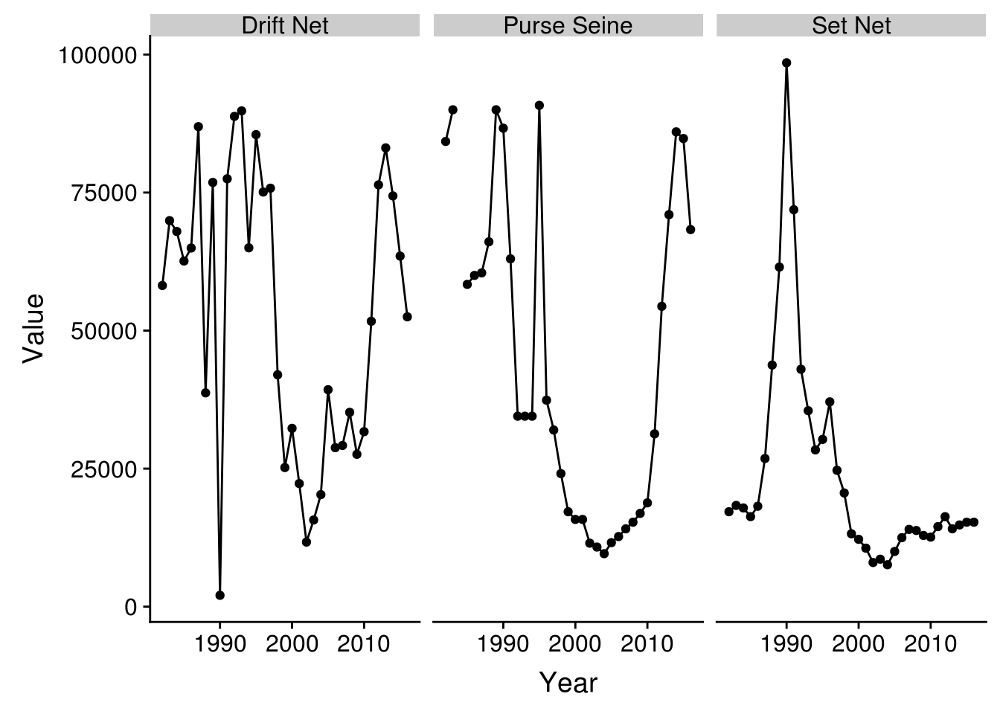
facet_wrap() chose a layout for us but, in this case, it aids comparison if we stack eachpanel on top of one another:
ggplot(permits_ci, aes(Year, Value)) +
geom_point() +
geom_line() +
facet_wrap(~ Gear, ncol = 1)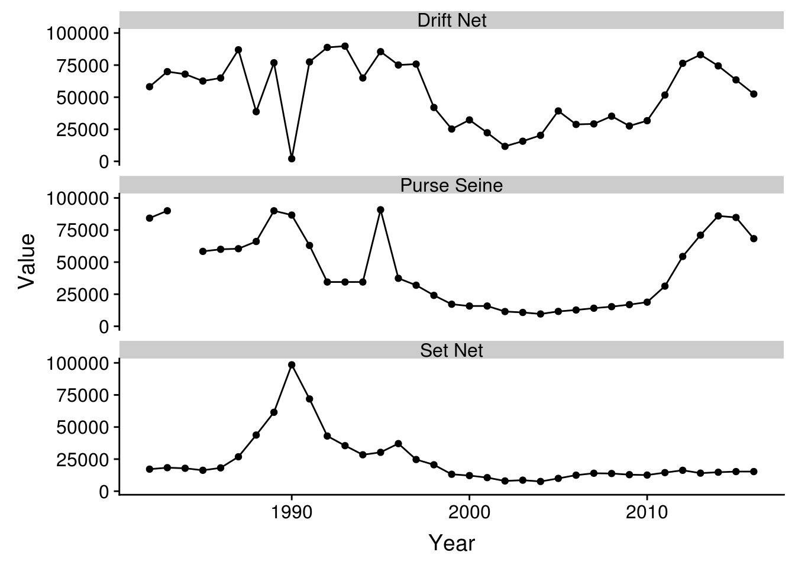
Note that the X and Y limits are shared across panels which is often a good default to stick with. For example, if we plot permit value over time by gear type, we don’t get a very readable plot due to differences in permit values across gear types:
ggplot(permits, aes(Year, Value, group = Region)) +
geom_line() +
facet_wrap(~ Gear)## Warning: Removed 2 rows containing missing values (geom_path).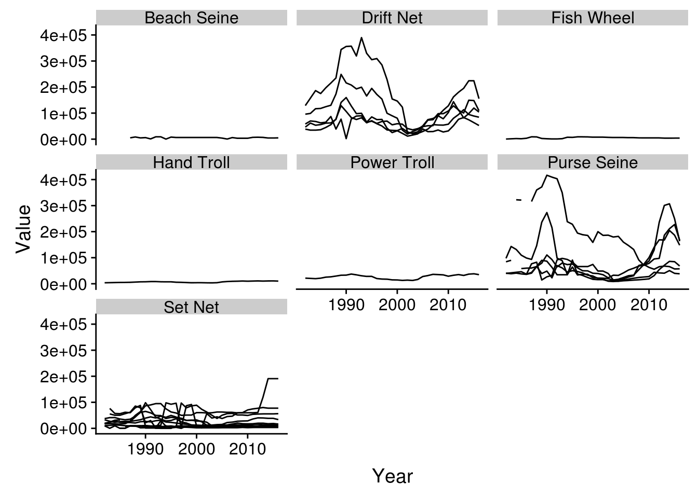
Note that I also added group = Region to the aes() call, which tells geom_line() to draw one line per Region instead.
Allowing the Y scales to differ across panels makes things much easier to see:
ggplot(permits, aes(Year, Value)) +
geom_line(aes(group = Region)) +
facet_wrap(~ Gear, scales = "free_y")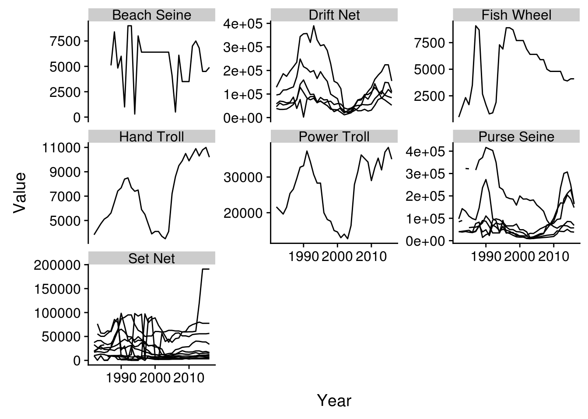
9.9 Plot customization w/ themes
ggplot2 offers us a very highly level of customizability in, what I think, is a fairly easy to discover and remember way with the theme function and pre-set themes.
ggplot2 comes with a set of themes which are a quick way to get a different look to your plots. Let’s use another theme than the default:
ggplot(permits, aes(Value, StdDev, color = Gear)) +
geom_point() +
theme_classic()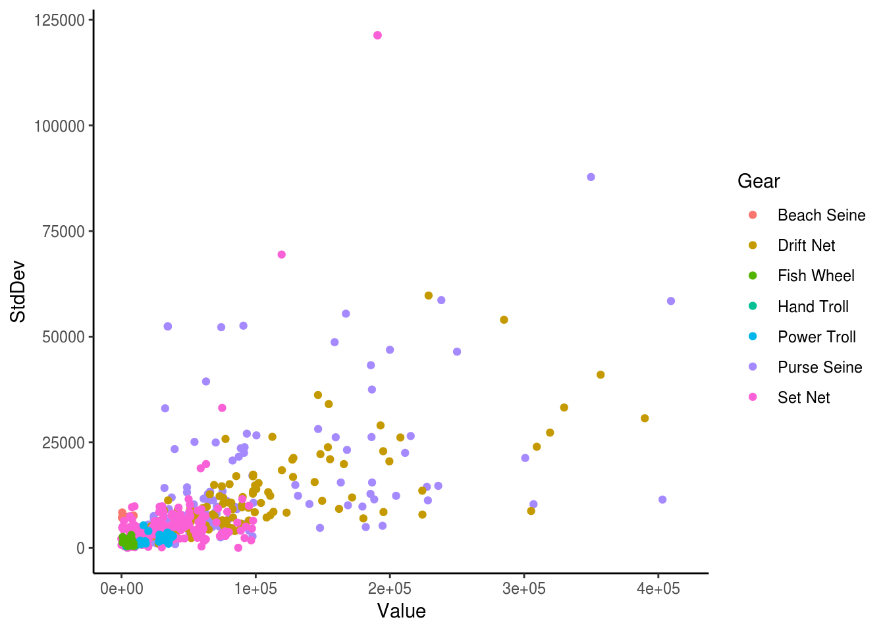
- Exercise: Find another theme and use it instead.
Hint: Built-in themes are functions that start with
theme_.
The legend in ggplot2 is a thematic element. Let’s change the way the legend displays:
ggplot(permits, aes(Value, StdDev, color = Gear)) +
geom_point() +
theme_classic() +
theme(legend.position = "bottom",
legend.background = element_rect(fill = "#EEEEEE", color = "black"),
legend.title = element_blank(),
axis.title = element_text(size = 16))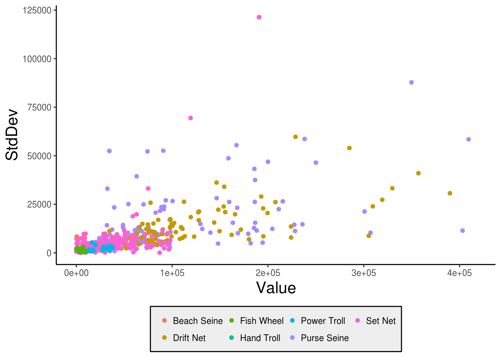
Let’s adjust our axis labels and title:
ggplot(permits, aes(Value, StdDev, color = Gear)) +
geom_point() +
theme_classic() +
theme(legend.position = c(1, 1),
legend.justification = c(1,1),
legend.direction = "horizontal",
legend.title = element_blank()) +
xlab("Permit Value (unadjusted USD)") +
ylab("Permit Std. Dev. (unadjusted USD)") +
ggtitle("Permit Standard Deviation against Permit Value by Gear Type",
"or: I wish I owned a seine permit")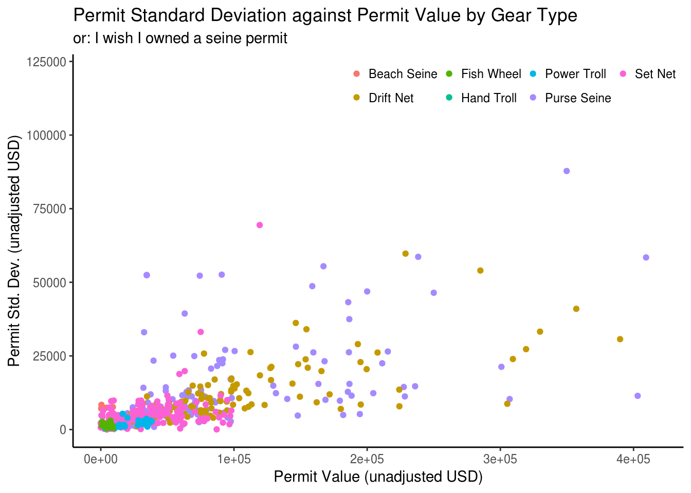
In this case, we’ve put together a theme by adding it to our plot code with a + symbol.
It turns out that we can save our theme to a variable and add it to any plot we want:
my_theme <- theme_bw() +
theme(legend.title = element_blank(),
panel.grid.major = element_line(size = 1, linetype = 4),
panel.grid.minor = element_blank())
ggplot(permits, aes(Value, StdDev, color = Gear)) +
geom_point() +
my_theme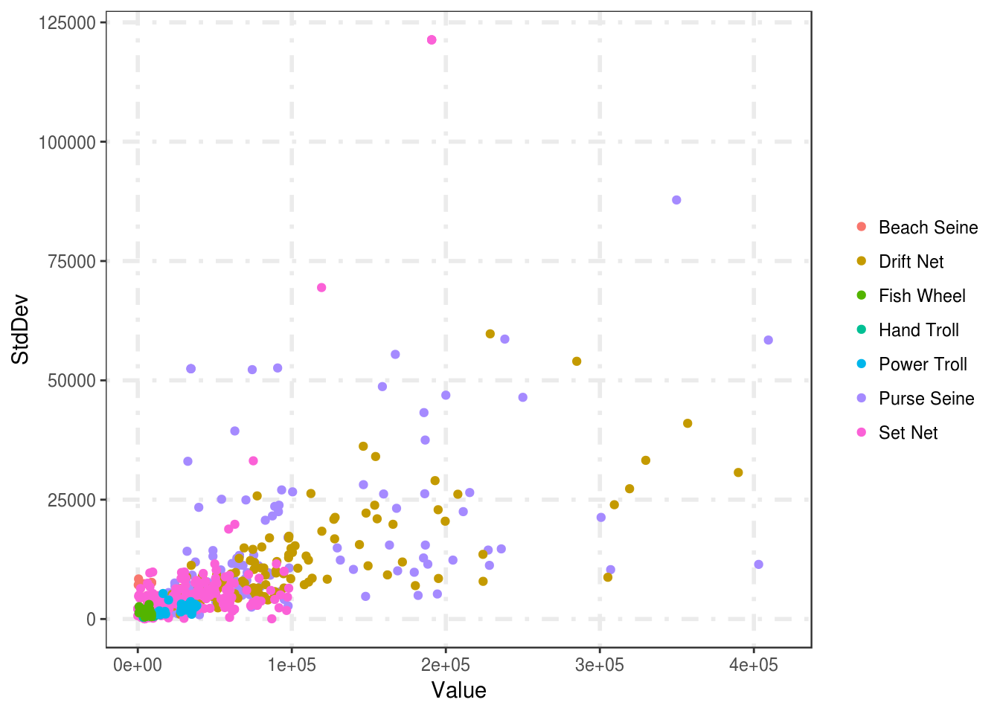
- Exercise: Look at the help for ?theme and try changing something else about the above plot.
More themes are available in a user-contributed package called ggthemes.
9.10 Saving plots
Let’s save that great plot we just made.
Saving plots in ggplot is done with the ggsave() function:
ggsave("permit_stddev_vs_value.png")ggsave automatically chooses the format based on your file extension and guesses a default image size.
We can customize the size with the width and height arguments:
ggsave("permit_stddev_vs_value.png", width = 6, height = 6)You may notice if you often save plots that the scaling of various elements can get funky. This is because ggplot scales plot elements based on relative sizes. This most commonly manifests itself as too large/small axis labels. You can remedy this in a few ways:
- Change the plot dimensions
- Changing the base_size (
theme_classic(base_size = 16)) - Customize your theme (
theme())
9.11 Bonus: Multi-panel plots: Beyond facets
Often times, we outgrow the small multiples (facet) paradigm. For example, we might want a line plot and a box plot to appear in the same graphic.
suppressPackageStartupMessages({
library(gridExtra)
})
p1 <- ggplot(permits_se_seine, aes(Year, Value)) +
geom_point() +
geom_line()
p2 <- ggplot(permits %>% filter(Gear == "Purse Seine"), aes(Region, Value)) +
geom_boxplot() +
scale_y_continuous(labels = function(x) { format(x, scientific = FALSE) })
grid.arrange(p1, p2)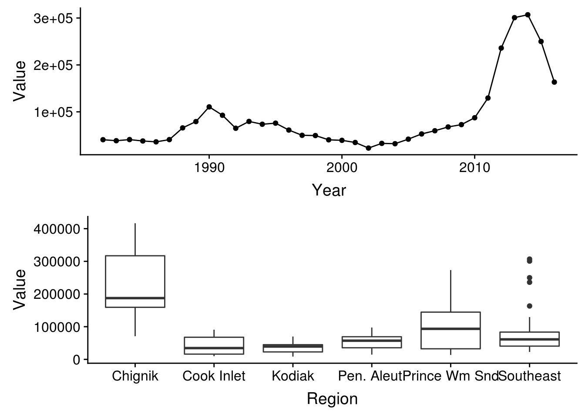
# Install package (run if needed)
# install.packages("cowplot")
suppressPackageStartupMessages({
library(cowplot)
})
plot_grid(p1, p2, align = "hv", ncol = 1)## Warning: Removed 6 rows containing non-finite values (stat_boxplot).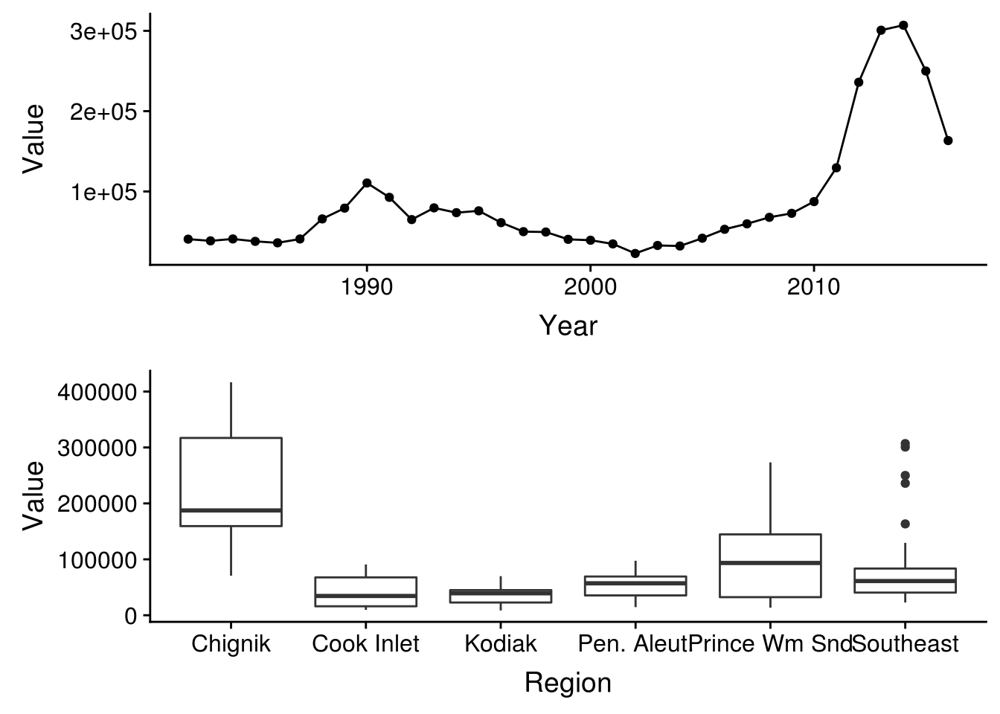
9.12 Bonus: Round two
If we have time, we’ll walk through some ways we can augment our ggplot2 knowledge with packages that build on top of ggplot.
- ggplot extensions
ggmap > ggmap makes it easy to retrieve raster map tiles from popular online mapping services like Google Maps, OpenStreetMap, Stamen Maps, and plot them using the ggplot2 framework
-
ggsci offers a collection of ggplot2 color palettes inspired by scientific journals, data visualization libraries, science fiction movies, and TV shows.
- ggbeeswarm